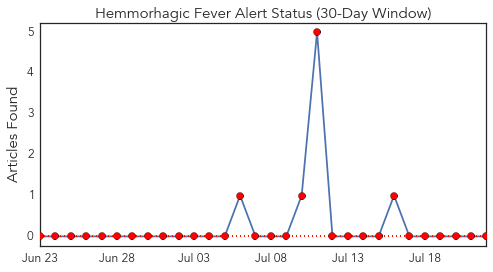
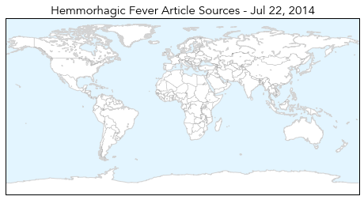
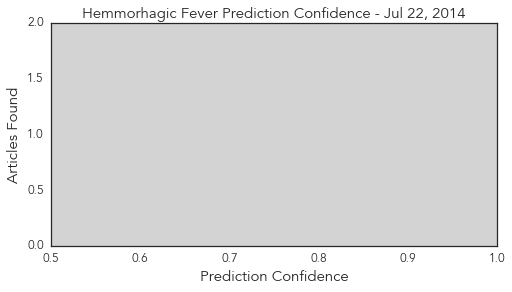
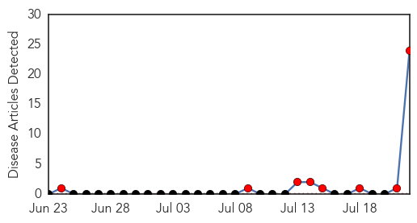
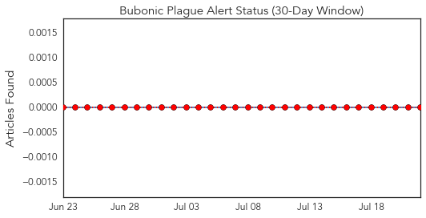
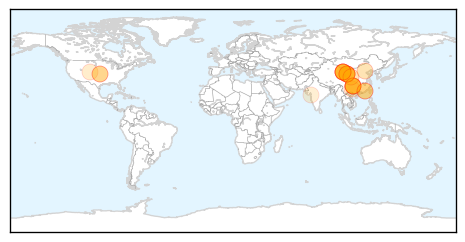
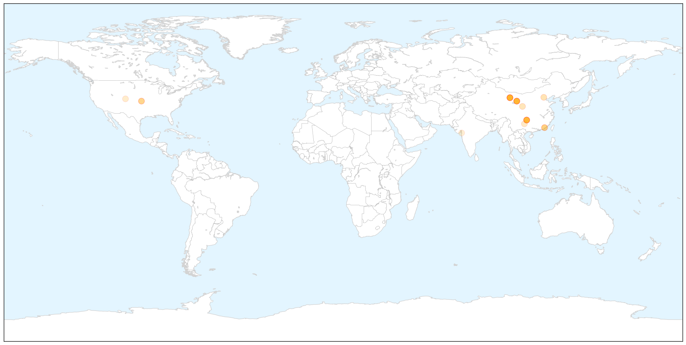
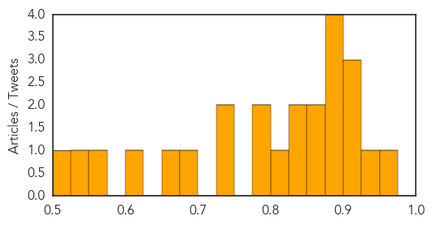

Hemmorhagic Fever
30-Day Web Trend
4 alerts, 0 warnings

30-Day Twitter Trend
0 alerts, 0 warnings

Article Locations

Article Confidences
Top Articles:
-
No articles found for Jul 22, 2014
Top Tweets:
-
No tweets found for Jul 22, 2014
Bubonic Plague
30-Day Web Trend
8 alerts, 0 warnings

30-Day Twitter Trend
0 alerts, 0 warnings

Article Locations

X

Article Confidences
Top Articles:
- 0.967
- Chinese Officials Seal Off 'Plague' City, Puzzling US Experts
- 0.942
- Bubonic plague death in Yumen, China sparks quarantine
- 0.915
- City sealed off after bubonic plague death
- 0.901
- Parts of Chinese city in quarantine after plague death: Xinhua
- 0.901
- Parts of Chinese city in quarantine after plague death: Xinhua
- 0.898
- Chinese city sealed off after bubonic plague death
- 0.888
- Parts of Chinese city in quarantine after plague death -Xinhua
- 0.884
- Parts of Chinese city in quarantine after plague death -Xinhua
- 0.879
- Town isolated after bubonic plague outbreak
- 0.856
- Town ‘sealed off’ after man dies of plague in China
- 0.855
- China 'seals off' town after man dies of bubonic plague
- 0.849
- Chinese city 'sealed off' after plague death
- 0.841
- Chinese city 'sealed off' after plague death
- 0.819
- Chinese city declares quarantine after man dies of plague
- 0.795
- Chinese city Yumen quarantined as resident dies of BUBONIC PLAGUE
- 0.787
- Plague kills one in China - asia - world
- 0.734
- Uh oh, there’s bubonic plague in China
- 0.732
- Man Dies of Bubonic Plague in China; Authorities Cut Off Town
- 0.682
- Bubonic plague hits Chinese city of Yumen and places 141 people in quarantine
- 0.667
- City ‘sealed off’ after man dies of plague in China
- 0.602
- Chinese City in Quarantine After Bubonic Plague Death: Report
- 0.563
- China seals off city after resident dies of bubonic plague
- 0.544
- China City ‘Sealed Off’ After Man Dies Of Bubonic Plague
- 0.517
- Chinese City Sealed Off After Man Dies of Bubonic Plague
Top Tweets:
-
No tweets found for Jul 22, 2014